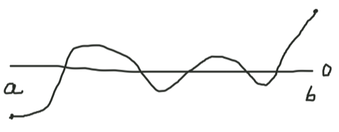
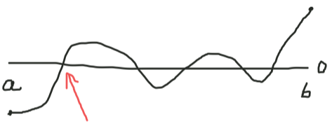
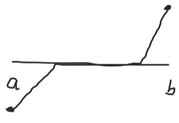

In this module, you will explore how the intermediate value theorem works. You can click below on wavy text to display notes in the sidebar.
Theorem (Intermediate value theorem).
Let a, b be real numbers such that a < b.
Let f: [a,b] → R be a continuous function such that f(a) < 0 and f(b) > 0.
Then there exists c ∈ [a,b] such that f(c) = 0.
A continuous function can intuitively be thought of as a function that can be drawn without lifting the pencil. So if the function starts out below zero, and ends up above zero, then it makes sense that at some point, the function must have crossed zero. In the graph below, you can see that the function crosses zero five times.

The intermediate value theorem says nothing about the number of times the function crosses zero.
How do we prove this theorem?
There are several approaches, but here we will directly use the least upper bound property of the real numbers, which says that any nonempty set of real numbers which is bounded above has a least upper bound.
Let's try to directly find a root of the function f. The displayed function has multiple such roots, so we'll have to pick one of them to find. Which one do you want to find?
-
Find the smallest (leftmost) root
[pick]
-
Find the second smallest root
[pick]
-
Find the penultimate (second from the right) root
[pick]
-
Find the largest (rightmost) root
[pick]
Good choice! Now try to come up with an expression for the smallest root!

-
Ok, I've thought about it.
[pick]
What expression finds the smallest root? (If the expression you came up with isn't one of the options, then try to see if it's equivalent to one of them.)
-
sup{x ∈ [a,b] : f(x) < 0}
[pick]
-
Define Vx to be Vx = f([a,x]) = {f(x) : x ∈ [a,x]}. Then the root in question is sup{x ∈ [a,b] : sup Vx ≤ 0}
[pick]
-
Define Vx to be Vx = f([a,x]) = {f(x) : x ∈ [a,x]}. Then the root in question is sup{x ∈ [a,b] : sup Vx < 0}
[pick]
This might sound like an innocent (if slightly odd) thought. If a function crosses zero several times, surely there's a second smallest location, right? This turns out to be wrong, and here's why. Consider a piecewise function that is constant at zero for some chunk of time:

Here there is a smallest and largest place where the function equals zero, but there is no second smallest, just like there is no smallest positive real number.
That will work. So let c := sup{x ∈ [a,b] : sup Vx ≤ 0}. Now we have to show that this is actually a real number, i.e. that the least upper bound actually exists. To do this, we have to show that the set {x ∈ [a,b] : sup Vx ≤ 0} is nonempty and bounded above.
First let's show the set is nonempty.
-
The set is nonempty since it contains a
[pick]
-
The set is nonempty since it contains b
[pick]
I think this will work too, but I haven't written this branch yet.
That's right. V_a = {f(a)}. Since f(a) < 0, sup V_a < 0, so a is in the set.
Next, let's show that {x ∈ [a,b] : sup Vx ≤ 0} has an upper bound.
-
a is an upper bound of the set.
[pick]
-
b is an upper bound of the set.
[pick]
-
1 is an upper bound of the set.
[pick]
-
+∞ is an upper bound of the set.
[pick]
V_b = f([a,b]) so f(b) ∈ V_b. So sup V_b ≥ f(b) > 0. This means that b cannot be in the set!
That's right. Since {x ∈ [a,b] : sup Vx ≤ 0} is a subset of [a,b], this means that b is an upper bound.